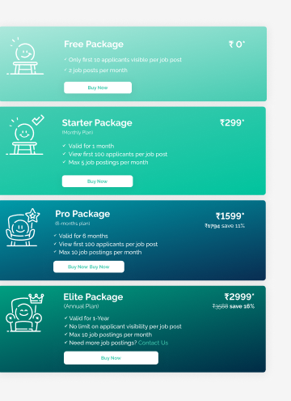

One listing, many roles — a recruitment app built only for events.
Mostly Events staffs weddings and events shift by shift — a décor lead, servers, a coordinator, a photographer, all from one event post. I designed both sides solo at Developer Bazaar: the recruiter product for event companies and the job-seeker side for freelancers, from gathering requirements through to usability testing.


Event staffing isn't one job. It's a crew.
A wedding needs a planner, a decorator, servers and a photographer — usually for a single day, often hired separately.
I studied how Naukri, Indeed and similar boards handle this. They all share one assumption: one listing = one role, one salary, one Apply button. That works for full-time hiring. It breaks for event work, where a single event post has to advertise several roles at several day-rates, and a freelancer needs to know their odds for their role — not the listing as a whole.
Full-time hiring flows don't fit gig work. A wedding-day server and a full-time hospitality manager have completely different needs — day-rate vs. salary, one-off vs. ongoing, verify-in-a-day vs. a formal process. Forcing both down the same funnel serves neither.
Build a recruitment product around the event, not the role: one post that can carry several freelance sub-roles, each priced and counted on its own — with a familiar apply-directly path kept for full-time hires.
What I learned before designing a screen.
Requirements mapping with the product team, plus a teardown of the incumbents. Three findings shaped both sides of the app.
- 01Job boards optimise for one number: salary.
Gig workers weigh a different set — day rate, vacancy count, distance, and how quickly they'll be paid. The listing has to surface those.
- 02A gig CV isn't a CV.
Event freelancers work company-to-company with no single employer history. A standard résumé form has no slot for how they actually work.
- 03Trust runs both ways.
An employer booking a stranger for a wedding day needs a signal fast; a freelancer needs to know the company is real. Verification had to be light on each side, but tailored — an ID check for a person, a business document for a company.
The idea that shaped both sides.
When a recruiter posts a freelance event job, they don't pick one role — they add a Freelance Type for each: Hospitality Management, F&B, a Shadow. Each carries its own title, day-rate range and number of vacancies.
On the job-seeker side, that same post reads as several distinct opportunities — a decorator and a server open the listing and see different pay and different competition. One post staffs the whole crew, without becoming five posts to manage.

₹Per-role day rate
Each sub-role gets its own ₹-per-day range — set as a number or a band — not one blended rate for the listing.
#Independent vacancy counts
“2 Vacancies” for décor, “1” for a shadow role — set by the recruiter, visible to the applicant before they apply.
▸Four post types
Full-Time, Freelancing, Internship and Project Manager — each with a posting form built for that kind of hire.
?Screening per listing
Custom questions — free-text and yes/no — surface as a “Career Fit Assessment” before a candidate can submit.
Post the job, then work the pipeline.
The bulk of the design work. An event company signs up, verifies with a business document, and lands on a dashboard built around one question — who do I still need to hire?


An assessment, not just a rating
For each candidate the recruiter records Good Fit / Maybe / Not A Right Fit against the specific role — a lightweight shortlist that survives across the whole applicant pool.
The event-industry vocabulary, built in
Roles, skills and filters use the language of the trade — Décor Designer, Runner, Shadow, Vendor Management — so a post takes seconds to scope, not a paragraph to write.
Built for people who work gig to gig.
Free for freelancers. The profile drops the single-employer résumé assumption — an availability toggle, tagged experience instead of job titles, a portfolio link, and a free-text “References / Companies” field.
Applying to a freelance role adds one step — pick the sub-role and rate — then any screening questions. After that, a plain-language status tracker shows exactly where the application stands, mirroring the stages the recruiter moves them through.


Different verification for a person and a company.
Both sides verify, but not with the same thing. A freelancer completes a photo + ID check — two steps, two ticks. A company uploads a business document like GST to prove it's real. Each check is short enough not to stall sign-up, and each is the right signal for who's on the other end.
Free to find work. Pay to hire at volume.
Job-seekers never pay. Recruiters get a free tier and upgrade as they post more — the paid plans lift the caps on applicant visibility and postings per month, which is what an event company actually runs out of in a busy season.
- First 50 applicants / post
- 2 posts / month
- First 100 applicants / post
- 5 posts / month
- First 100 applicants / post
- 10 posts / month
- Saves ~11%
- Unlimited applicant visibility
- 10 posts / month
- Saves ~16%


A calm, industry-specific visual language.
One typeface carrying the whole hierarchy, a mint-to-slate gradient as the palette, and a set of line illustrations for the empty and onboarding states. Values below are the file's own named palette, not eyeballed from screenshots.

Where it landed.
Both sides are designed end to end and the product is live at mostlyevents.com. [Anjali — one real number here: recruiters signed up, jobs posted, applications, hires.]
The part I'm proudest of is the “one listing, many roles” model — it's a small structural decision on one screen that shapes how both sides of the whole product work.
- Recruiter product — post, verify, manage, assess Designed
- Job-seeker side — profile, apply, track Designed
- Live product mostlyevents.com
- High-fidelity imagery on every screen In progress
What I'd do next: take the freelance role picker back to more event freelancers to test the rate-comparison moment, and finish the visual pass so every screen carries real photography, not placeholders.